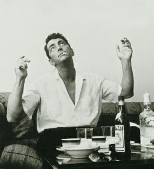

Vamos con otro plato de sábados por la noche, de paz espiritual. Otro pulso, un cara a cara cayendo juntos por un barranco, moviéndonos en el alambre de un champagne, comiendo con hambre, riendo con ganas. Buscamos mesa para poner encima las cartas, las pelotas y la botella vacía.
Belga Queen: Situado en Rue Fossé aux Loups 32, en pleno centro de la ciudad se alberga en un edificio del siglo XVIII es un restaurante con gusto hacia lo nacional y menús ligeros confeccionado a través de productos exclusivos del país. Utilizan cerveza nacional artesana en mucho de sus platos y además tienen una carta de vinos belgas fantástica. Después de cenar puedes bajar del restaurante al club para tomarte la última copa, la sala está ambientada con colores representando la sabana africana dándole un toque exótico a la noche, tu noche. Recomendado llamar para reservar mesa.
Bonsoir Clara: Localizado en Antoine Dansaert 22 cerca de la plaza de la Bolsa, es un restaurante que combina lo moderno con lo clásico, quizás para paladares más marcados, aunque tienen un menú bastante completo. Moderno porque la cocina siempre está abierta a cualquier petición de los clientes, clásicos por su inspiración en la cocina mediterránea en mucho de sus platos. Si te gusta el caldo de Baco, la carta de vinos es muy recomendable.
Kwint: Un lugar extraordinario, en Mont des Arts 1, aquí tienes la posibilidad de disfrutar de una cena increíble mientras la panorámica de la ciudad te deja boquiabierto. Además el menú es para sentirte rey por unas horas, la carta inspirada en la dieta real ofrece productos selectos como caviar, jamón ibérico o el mejor marisco de Europa. Puede aquí tengas el partido ganado antes de jugar.
Blue de Toi: Perfecto para una cena en pareja, este restaurante localizado en Rue des Alexiens 73 en el barrio de la Chapelle. Cocinan con los mejores productos del mar combinando con las mejores esencias del Caribe, Brasil y Magreb, haciendo una gran cocina fusión. También Baco presente para facilitar los primeros pasos, gran selección de vinos franceses.
Para cualquier sugerencia, pregunta, o si queréis invitar a este humilde blogger a cenar, ya saben. No lo duden.